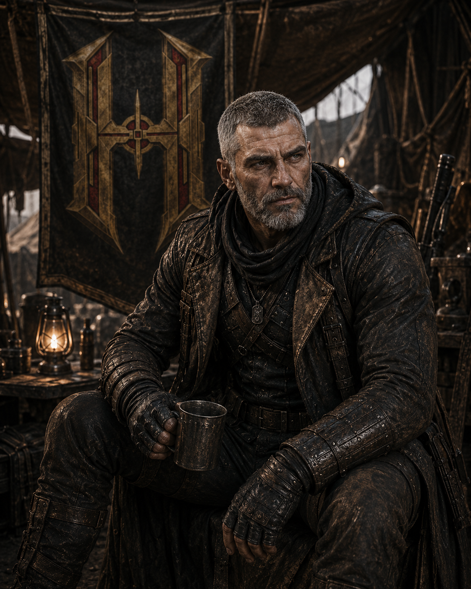

ONDE A ROTA
NÃO DESISTE.
Três registros do presente de Dimitri: acampamento, terreno aberto e um mapa ao lado de Jack. A função de campo de Dimitri permanece em análise.
LOOP DE REGISTROS ATIVO
ARQUIVO D-08 // LEITURA VISUAL
TRÊS CENAS.
TRÊS CENAS.
CONTEXTO EM ABERTO.
Use as setas ou os registros abaixo. A sequência segue sozinha quando possível, e cada imagem é mantida inteira no arquivo.

D-08.1
Ponto de vigília
Dimitri aparece em vigília no acampamento dos Hellsings.